Easter Egg Songs
Interact with 3 Bunny Headphones


Light all 3 Dragon Braziers with the Upgraded Dragon Sword


Free Powerups
Shoot Powerup Items around the Map


After Shooting all of the Other Powerups a Fire Sale Powerup will Spawn

Free Perk Easter Eggs
Bartender Easter Egg
Pick up 3 Bottles of Alchohol, then Interact with the Silver Tray in the Pub to Start the Minigame


Look at the Circle on the Bar in front of the Zombies and grab the same Colored Glasses and Place them in their Circle to get Points

Once you Serve Enough Zombies you will get PhD for Free
Mr. Peeks Hide & Seek
Quickscope Mr. Peeks 4 Times around the Map

Incantation Lockdown
Use all 4 Incantions on the Exposed Wall Puzzle in the Undercroft to Start a 3-Phase Lockdown, at the End you will get Rewards that Include a Free Perk
Cannon Easter Eggs
Cannon Crank
Grab the Crank and the Blowtorch

Interact with the Crank Base by the Cannon to Weld the Crank back onto it
Free Monkey Bombs
Shoot yourself out of the Cannon towards the Town Square 100 Times, you will Hit the Clock Tower and 2 Monkey Bombs will Pop Out
The Bell in the Tower will also Attract all of the Zombies for 1 Minute
Rat King Easter Egg
Pick up a Wheel of Cheese from the Shop Window by the Pub in the Town Square
Scare Away the 10 Rats around the Map by Looking at them
Interact with the Rats around a Dinner Plate in the PAP_ROOM to feed them Cheese and get the Rewards and a Crown
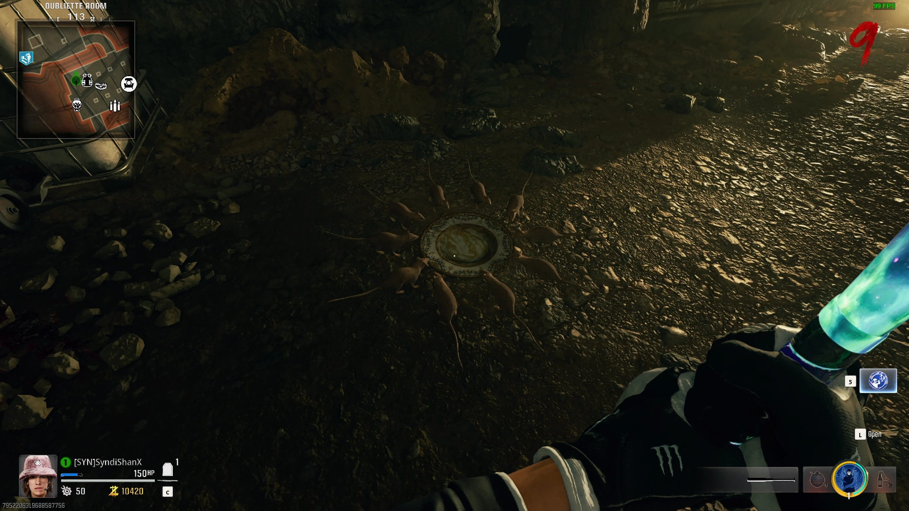
Maya Storyline Easter Egg
If you're playing as Maya, you can Interact with the Radio on the Table near Vulture Aid when it is Beeping SOS in Morse Code to go into a Secret Area and Find Franco
Knight Guardian Easter Egg
Obtain a Knight Chess Piece from one of 4 Tables around the Map, then Place it on the Chess Board in the Sitting Room
Kill Zombies until the Knight Enlarges, it will Follow you around and Smash Zombies around you

 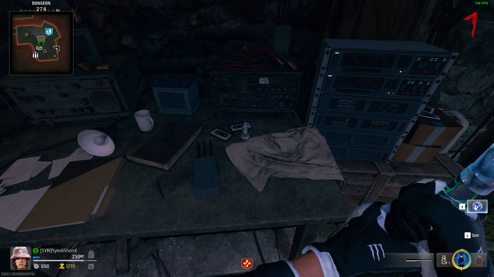
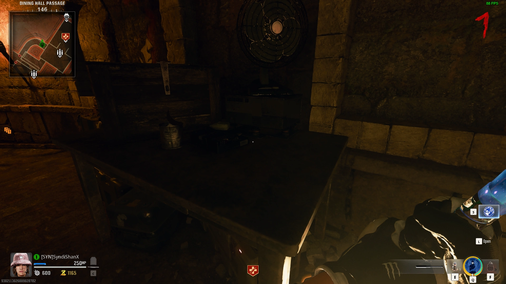
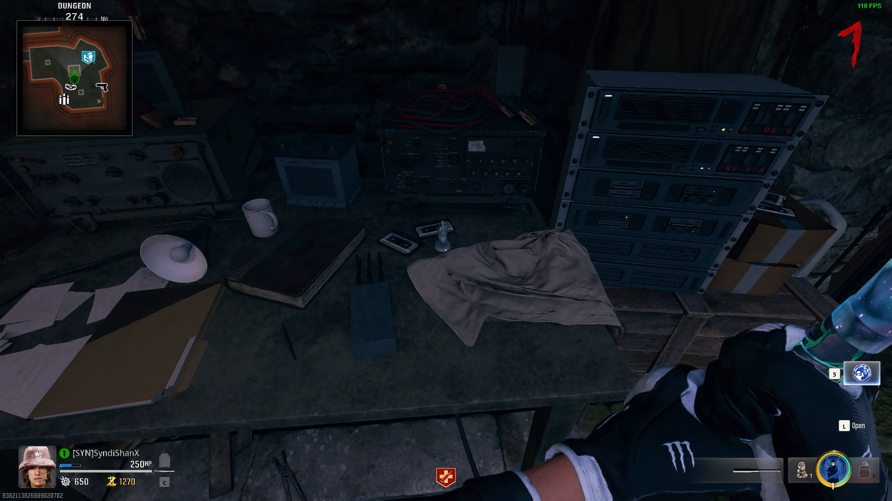
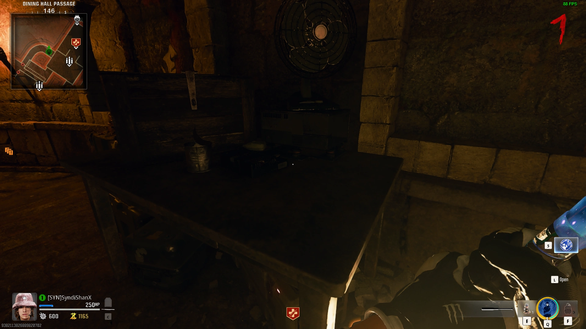Well Easter Egg
Kill a Vermin that Crawls out of the Well on a Pest Round and Throw a Grenade into the Well to Spawn a bunch of Free Essence Drops
Deposit 10,000 Points back into the Well before the Round Ends
Come back to the Well on a Different Pest Round and Throw another Grenade into the Well and all 10,000 of your Points will come back out, whioch you can use Double Points on
Fireplace Trap Easter Egg
Light the Wood Piles in all 4 Fireplaces around the Map in Quick Succession using Molotovs or the Dragon Sword
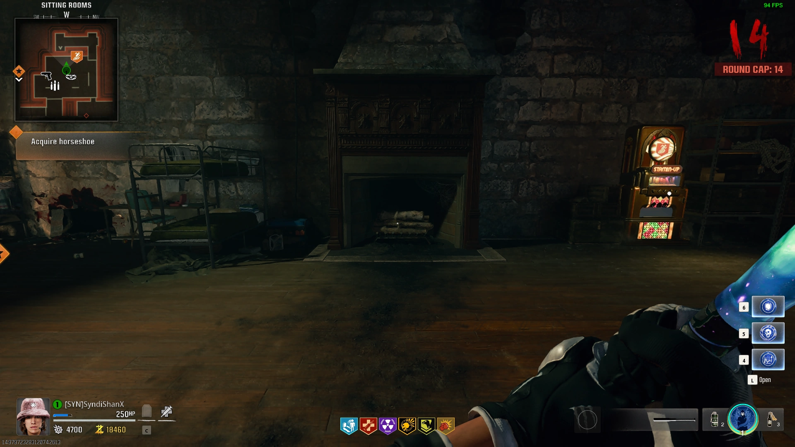 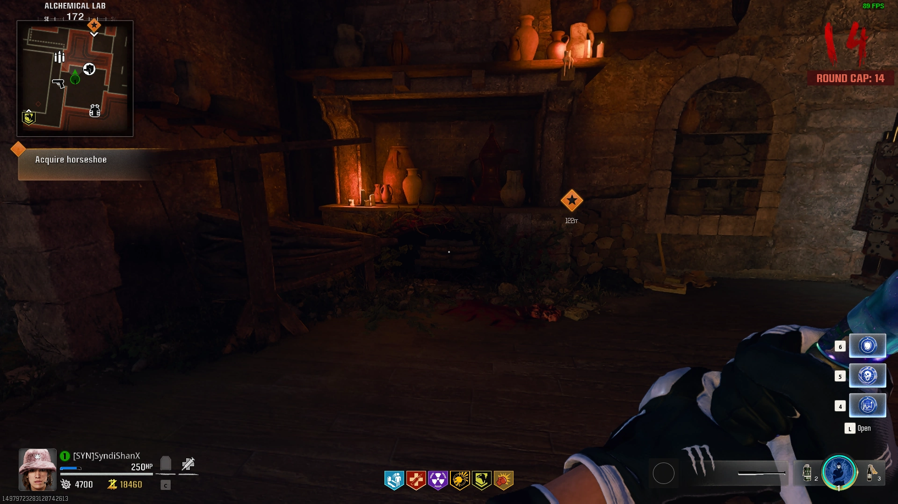

The Final Fireplace will Shoot out Fireballs that will Damage Zombies, you can Repeat this every 5 Rounds
Bastard Swords
Progress to Round 10 or Higher, Kill a Knight, pick up the Stamp, then Interact with one of the 4 Statues in the Dining Hall to get one on the Swords

Dragon Sword Upgrade
Insert the Dragon Sword into the Statue in the Entrance Hall at the top of the Stairs
Go to the 3 Locations marked on the Map Above the Statue

Grab the Fire out of the Brazier and Take it back to the Statue as Fast as Possible as you Take Damage when Holding it (You can Melee Zombies to Fully Heal)
Once you Return all 3 Flames, the Dragon will Upgrade the Sword

Raven Sword Upgrade
Grab the Antiquity from the Alchemical Lab and Place it into the Puzzle in the Pub's Basement

Place the Raven Sword into the Bottom Slot of the Puzzle, Input the Code based on your Item

Lay Down next to the Portals on the Ground to make the Orbs go into them
Lead 3 Orbs into each Portal, then go back to the Puzzle and the Sword will go into a Portal and be Upgraded

 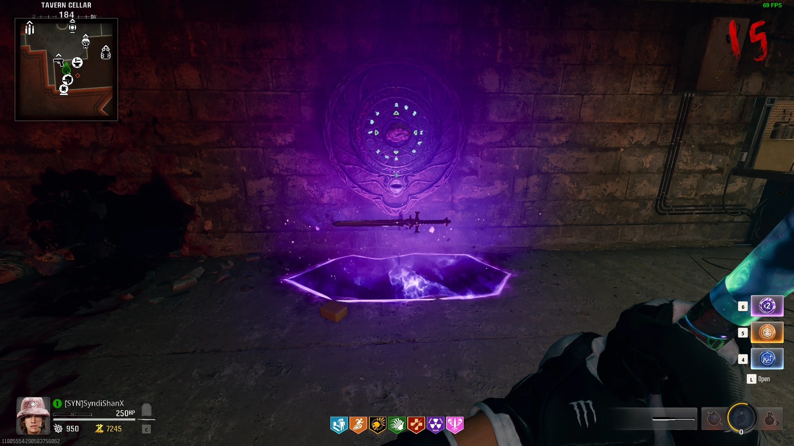
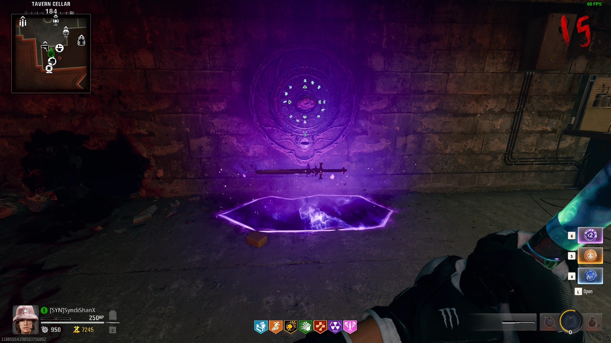

Lion Sword Upgrade
Kill a Glowing Parsite with the Lion Sword, then Melee the Door with a Lion Knocker on it to Reveal a Glyph
Repeat this 4 Times, then Interact with the Door to enter a Secret Room

Place the Sword in the Pedestal, then Shoot the Glyphs in Order (The Sword Pedestal Shows the next Glyph)
If you Shoot all 4 Glyphs in the Correct Order in Time, the Sword will be Upgraded

Stag Sword Upgrade
Pick up a Lightning Rod Dropped by an Armored Zombie that Spawns in the Dungeon after Obtaining the Stag Sword
Pick up a Lightning Rod next to Deadshot Daiquiri
Get Dead Wire on a Gun, then Shoot the Electric Panel under the Antenna in the Upper Village to Knock the Lightning Rod Down, then Pick it Up (You can also use a Shock Charge)


Place all 3 Lightning Rods in the Urn on the Castle Wall
Every 15 Seconds your Sword will be Charged with Electricity, Melee the Urn 3 Times to Charge it
Insert the Stag Sword into the Top of the Urn and the Sword will be Upgraded
Fire Incantation
Grab Dragon Sword or Molotovs and Light the 3 Pyres around the Front of the Castle (You can also use Molotovs)
Kill the Doppleghast with the Dragon Sword, then Pick up Ra's Ankh


Place Ra's Ankh in the Yellow Circle in front of the Castle
Kill the Zombies that Spawn to Reveal a Glowing Chest
Melee the Chest with the Upgraded Dragon Sword to Reveal the Fire Incantation
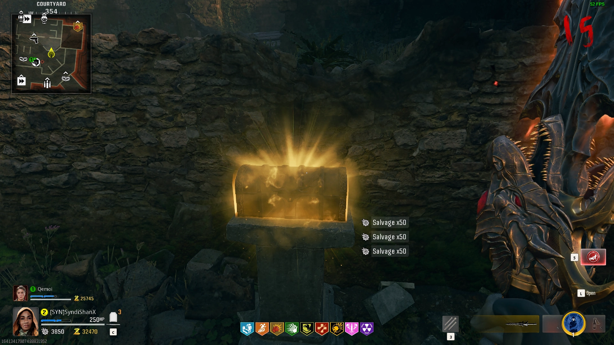
Dark Incantation
Shoot the Raven in the Water Slide (You can use Explosives to hit it from Spawn)
Shoot the Raven out of the Sky in the Town Square, then Pick up the Raven's Talon
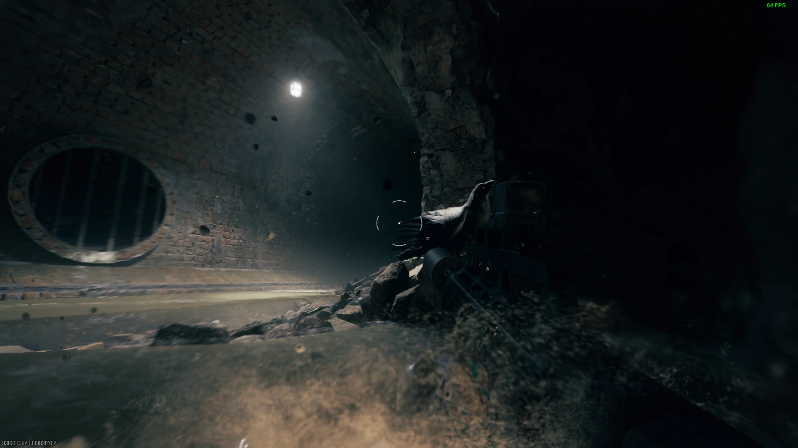

Place the Raven's Claw in the Yellow Circle in the Undercroft
Kill the Zombies that Spawn to Reveal a Glowing Chest
Melee the Chest with the Upgraded Raven Sword to Reveal the Dark Incantation

Light Incantation
Shoot the Mirror behind the Crystal in the Dining Hall above Vulture Aid
Shoot all of the Mirrors behind the Crystals to Redirect a Beam to Melt a Hole in the Bust, then Pick up the Paladin's Brouch


Place the Paladin's Brouch in the Yellow Circle in the Dining Hall in front of the Lion Painting
Kill the Zombies that Spawn to Reveal a Glowing Chest
Melee the Chest with the Upgraded Lion Sword to Reveal the Light Incantation

Electric Incantation
Obtain Otto's Horseshoe by Shotting it off of the Wall in the Hilltop Barn, then Shoot Yourself out of the Cannon
Pegasus' Horseshoe is under the Storm Cloud to the Left or Right of the Town Square


Place Pegasus' Horseshoe in the Yellow Circle in the Town Square
Kill the Zombies that Spawn to Reveal a Glowing Chest
Melee the Chest with the Upgraded Stag Sword to Reveal the Electric Incantation

Main Quest
Unlock PaP
Talk to Krafft by opening the Hatch on the Door in the Dungeon

Trap Symbols
Pick up 4 Torn Pages in the Sitting Room

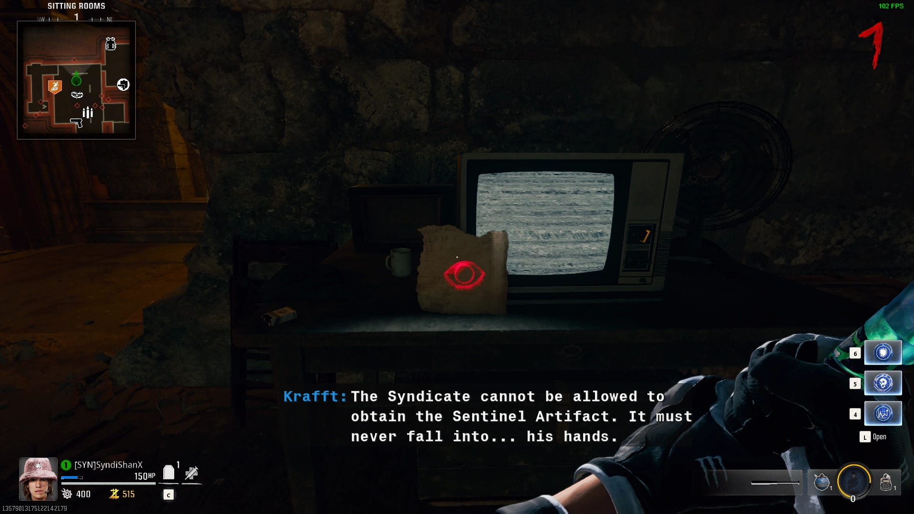


You can skip the Following Steps if you Note the Symbols on the Pages in order based on which sides are Ripped
Interact with the Urns in the Pub with the Roman Numerals on them and note down their Symbols in Order
Obtain Melee Machiato and Punch the Wall in the Undercroft to Reveal a Puzzle

Shoot the Symbols in Order to Reveal the Book
0 0 0 0 0
0 0 0 0 0
0 0 0 0 0
0 0 0 0 0
Interact with the Book to Place the Pages and note the 4 Symbols in Order

Obtain Melee Machiato and Punch the Wall in the Undercroft to Reveal a Puzzle
Shoot the Symbols in Order to Reveal the Book
0 0 0 0 0
0 0 0 0 0
0 0 0 0 0
0 0 0 0 0
Interact with the Book to Place the Pages and note the 4 Symbols in Order
Find the Trap with the exact same Symbols in Order, Activate it and Kill 10 Zombies with the Projectiles, it will Deactivate, Repeat this for all 4 Symbols
(The last one will always be in the Sitting Room)

Once you complete the last one a Red Orb will Spawn that you follow to a Wall in the Undercroft Staircase
Grab the Matching Incantation and Sword, use the Incantation, then Weapon inspect in front of the Statue matching your Sword, it should Start Glowing Yellow, Repeat for all 4 Symbols
Pick up the Orb that Lowers from the Sky

Dragon Sword Trial
-Go to the Front of the Castle, Place down the Orb, then Interact to Start the Trial
-Get Fire Kills around the Orb to fill it up
-Pick up the Orb once it's full
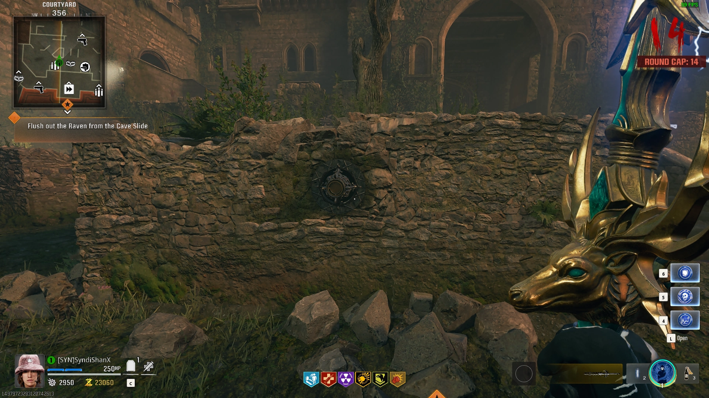
Lion Sword Trial
-Go to the Top Level of the Dining Hall, Place down the Orb, then Interact to Start the Trial
-Green Orbs will Spawn around the Dining Hall, run through them, Souls Fly into the Orb
-Pick up the Orb once it's full
Raven Sword Trial
-Go to the Undercroft, Place the Orb, then Interact to Start the Trial
-Get Void Kills around the Orb to fill it up
-Pick up the Orb once it's full
Stag Sword Trial
-Grab the Stag Sword and Incantation, go to the Town Square, Place down the Orb, then Interact to Start the Trial
-Get Electric Kills around the Orb to fill it up
-Pick up the Orb once it's full

**PREPARE FOR THE BOSS FIGHT**
Place the Orb into the Wall that has the 4 Animal Symbols, grab the Guardian Key from the Secret Room that Opens
Place the Key on the Base of the Guardian Statue in the Town Square to Start the Boss Fight
Kill the Guardian to Trigger the Cutscene